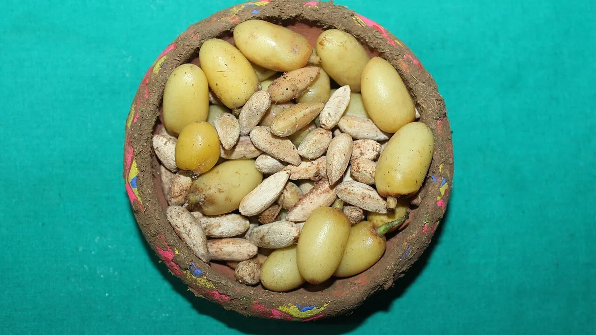

नीम लेपित यूरिया
Neem Coated Urea — Benefits, Limits & How to Identify a Genuine Bag
दानों का पीलापन मिलावट नहीं, असली होने की निशानी है। नीम की कोटिंग नाइट्रोजन को कुछ दिन ज़्यादा टिकाती है — पर ऊपर से बिखेरने की गलती नहीं सुधारती।
✍️ Kunal Rajput — KrashiMitra⏱️ 9 मिनट पढ़ें📅 अगस्त 2026

नीम के फल और बीज — इन्हीं से निकला तेल यूरिया के दानों पर चढ़ाया जाता है। तस्वीर कोटिंग की प्रक्रिया की नहीं, उसके कच्चे माल की है।
पीले दाने खराबी नहीं, पहचान हैं
🌿
500 ग्राम/टन
अनिवार्य नीम तेल कोटिंग
⏳
50–60 दिन
असर की अवधि
🧾
POS पर्ची
बिना इसके कभी न खरीदें
📖
भूमिका
दुकान से आप जो यूरिया की बोरी लाते हैं, वह नीम लेपित (Neem Coated) यूरिया ही है — चाहे बोरे पर आपने ध्यान दिया हो या नहीं। साल 2015 से देश में बनने वाला और बाहर से आने वाला 100% यूरिया नीम तेल की कोटिंग के साथ ही बिकता है। यानी "साधारण सफेद यूरिया" अब भारत के बाज़ार में मिलता ही नहीं। दानों पर जो हल्का पीलापन-भूरापन और तेल जैसी चिकनाहट दिखती है, वह मिलावट नहीं — वही कोटिंग है।
सबसे बड़ी गलतफहमी यही है कि किसान इसे मिलावट या खराब माल समझकर दुकानदार से "सफेद वाला" माँगते हैं, और कुछ जगह इसी डर का फायदा उठाकर बिना कोटिंग का नकली माल बेच दिया जाता है। इस लेख में तीन चीज़ें साफ हैं — नीम की कोटिंग असल में करती क्या है, इससे कितना फायदा सच में होता है और कितना नहीं, और बोरी असली है या नहीं यह खेत में ही कैसे परखें।
विज्ञापन
🔍
नीम लेपित यूरिया क्या है?
यह वही 46% नाइट्रोजन वाला साधारण यूरिया है, जिसके दानों पर कारखाने में नीम का तेल चढ़ा दिया जाता है। मात्रा सरकार ने तय की है — एक टन यूरिया पर कम से कम 500 ग्राम नीम तेल। यानी 45 किलो की एक बोरी पर मुश्किल से 22–23 ग्राम तेल बैठता है। इतनी पतली परत में भी असर होता है, क्योंकि नीम के तेल में मौजूद एज़ाडिरैक्टिन और निंबिन जैसे तत्व बहुत कम मात्रा में भी मिट्टी के जीवाणुओं पर काम करते हैं।
पहचान की तीन बातें — दाने का रंग हल्का पीला या मटमैला भूरा होता है, दूधिया सफेद नहीं; मुट्ठी में लेने पर हल्की चिकनाहट लगती है; और बोरी खोलते ही नीम की हल्की कड़वी गंध आती है। ये तीनों मिलकर ही भरोसा देती हैं, अकेला रंग नहीं — क्योंकि रंग तो किसी भी सस्ते डाई से चढ़ाया जा सकता है।
💡
कोटिंग से यूरिया की ताकत कम नहीं होती। नाइट्रोजन उतनी ही 46% रहती है। नीम तेल का वज़न इतना कम है कि बोरे की गुणवत्ता पर कोई असर नहीं पड़ता — बदलता सिर्फ यह है कि वह नाइट्रोजन कितनी तेज़ी से मिट्टी में बदलती है।
⚗️
नीम की कोटिंग काम कैसे करती है?
यह समझने के लिए पहले देखना होगा कि खेत में डालने के बाद यूरिया के साथ होता क्या है। यह चार सीढ़ियों का सफर है:
पहली सीढ़ी — घुलना: नमी मिलते ही यूरिया का दाना घुलता है। मिट्टी में मौजूद यूरिएज़ एंजाइम उसे 2–4 दिन में अमोनियम में बदल देता है।
दूसरी सीढ़ी — पकड़ में आना: अमोनियम पर धन आवेश होता है, इसलिए वह मिट्टी के कणों से चिपककर रुका रहता है। जड़ें इसी रूप को आराम से लेती हैं। यही वह अवस्था है जो हमें चाहिए।
तीसरी सीढ़ी — नाइट्रेट बनना: मिट्टी के नाइट्रीफाइंग जीवाणु अमोनियम को नाइट्रेट में बदल देते हैं। नाइट्रेट पर ऋण आवेश होता है — यह मिट्टी से चिपकता नहीं।
चौथी सीढ़ी — नुकसान: बिना चिपका नाइट्रेट सिंचाई या बारिश के पानी के साथ जड़ों से नीचे बह जाता है, और जलभराव में गैस बनकर हवा में उड़ जाता है।
नीम का तेल तीसरी सीढ़ी को धीमा करता है। वह नाइट्रीफाइंग जीवाणुओं की रफ्तार घटा देता है, इसलिए नाइट्रोजन ज़्यादा दिन तक उसी अमोनियम रूप में मिट्टी में टिकी रहती है जिसे पौधा सीधे ले सकता है। नतीजा — एक ही बोरी से पौधे को ज़्यादा दिन तक और ज़्यादा हिस्सा मिलता है, बजाय इसके कि वह पानी के साथ नीचे चला जाए।
💡
इसी वजह से नीम लेपित यूरिया का असर आम तौर पर 50–60 दिन तक रहता है, जबकि बिना कोटिंग वाले यूरिया का 30–45 दिन। धान जैसी लंबी अवधि की फसल में यह फर्क मायने रखता है।
📊
साधारण यूरिया बनाम नीम लेपित यूरिया
बिंदु
❌ बिना कोटिंग यूरिया
✅ नीम लेपित यूरिया
नाइट्रोजन
46%
46% — बराबर, कोई कमी नहीं
दाने का रंग
दूधिया सफेद
हल्का पीला या मटमैला भूरा
गंध
कोई खास नहीं
नीम की हल्की कड़वी गंध
नाइट्रोजन छूटने की रफ्तार
तेज़ — जल्दी नाइट्रेट बन जाती है
धीमी — अमोनियम रूप ज़्यादा दिन टिकता है
असर की अवधि
लगभग 30–45 दिन
लगभग 50–60 दिन
पानी के साथ बहकर नुकसान
ज़्यादा
तुलनात्मक रूप से कम
औद्योगिक दुरुपयोग
आसानी से हो जाता था
कोटिंग के बाद उस काम लायक नहीं बचता
बाज़ार में उपलब्धता
2015 से खेती के लिए बंद
आज बिकने वाला 100% यूरिया यही है
विज्ञापन
🏛️
सरकार ने इसे अनिवार्य क्यों किया?
कारण दो थे, और दूसरा वाला खेती से भी बड़ा था:
नाइट्रोजन की बर्बादी रोकना: डाली गई यूरिया का बड़ा हिस्सा फसल तक पहुँचता ही नहीं। कोटिंग उसे धीमा करके इस नुकसान को घटाती है, और उम्मीद यह भी थी कि किसान की कुल खपत कुछ कम होगी।
सब्सिडी वाले यूरिया की चोरी रोकना: यह असली वजह थी। यूरिया पर सरकार भारी सब्सिडी देती है, इसलिए वह प्लाईवुड-रेज़िन जैसे उद्योगों के लिए बहुत सस्ता पड़ता था। खेत के लिए बनी सस्ती बोरी कारखाने में चली जाती थी और असली किसान लाइन में खड़ा रहता था। नीम तेल चढ़ जाने के बाद वह यूरिया औद्योगिक इस्तेमाल के लायक नहीं बचता — यही एक कदम इस चोरी को काफी हद तक बंद कर देता है।
इसीलिए यह नियम पूरे देश पर एक साथ लागू हुआ — पहले देश में बनने वाले यूरिया पर, फिर उसी साल आयातित यूरिया पर भी। आज सब्सिडी वाली कोई भी यूरिया बोरी बिना कोटिंग के कानूनन नहीं बिक सकती।
⚖️
ईमानदार तस्वीर — कोटिंग जादू नहीं है
यह वह हिस्सा है जो खाद बेचने वाले नहीं बताते। एक टन पर आधा किलो तेल बहुत पतली परत है। यह नाइट्रीकरण को कुछ दिन धीमा करती है — रोकती नहीं। इसलिए:
यह धीमी गति से छूटने वाली खाद नहीं है। इसे सल्फर लेपित यूरिया या यूरिया ब्रिकेट जैसा मत समझिए। फर्क दिनों का है, महीनों का नहीं।
यह ऊपर से छिड़कने की गलती नहीं सुधारती। सूखी मिट्टी पर ऊपर से बिखेरी गई यूरिया की नाइट्रोजन अमोनिया गैस बनकर उड़ती है — नीम की कोटिंग इस रास्ते वाले नुकसान को नहीं रोकती। असली बचत डालने के तरीके से होती है, कोटिंग से नहीं।
यह कीटनाशक नहीं है। इतनी कम मात्रा में नीम तेल दीमक या तना छेदक को नहीं मारता। जो दुकानदार कहे कि इससे कीड़ा भी नहीं लगेगा और इसीलिए दाम ज़्यादा हैं, वह दो बार गलत बोल रहा है — दाम तो सरकार तय करती है।
ज़्यादा डालने का लाइसेंस नहीं है। कोटिंग का पूरा फायदा तभी मिलता है जब मात्रा संस्तुति के बराबर हो और किश्तों में दी जाए।
⚠️
कोटिंग से मिलने वाला फायदा मिट्टी, फसल और मौसम के हिसाब से बदलता है — हर खेत में एक जैसा नहीं मिलता। अपनी फसल के लिए यूरिया की सही मात्रा हमेशा मृदा स्वास्थ्य कार्ड और अपने KVK या कृषि विभाग की संस्तुति से तय करें।
🕵️
असली बोरी की पहचान — खेत में ही
कागज़ी सुरक्षा पहले, फिर दानों की जाँच:
POS मशीन से ही खरीदें: सब्सिडी वाली खाद की बिक्री POS मशीन पर आधार से होनी चाहिए। मशीन से पर्ची निकलती है और खरीद पर मोबाइल पर SMS भी आता है। जो दुकानदार बिना POS और बिना पर्ची के बेचे, उससे न खरीदें — शिकायत का सारा आधार यही पर्ची है।
बोरी की सिलाई और छपाई देखें: निर्माता का नाम, बैच नंबर, वज़न 45 किलो, MRP और "Neem Coated Urea" — सब छपा होना चाहिए। दोबारा सिली या हाथ से लिखी बोरी सीधा इनकार करें।
रंग, गंध और चिकनाहट — तीनों: सिर्फ पीला रंग काफी नहीं। मुट्ठी में मलने पर हल्की चिकनाहट और नीम की गंध भी आनी चाहिए।
पानी वाली जाँच: एक चम्मच दाने आधा गिलास पानी में डालें। असली यूरिया पूरा घुल जाता है, कोई रेत या कंकड़ नीचे नहीं बैठता, और घोल छूने पर ठंडा लगता है — यह यूरिया का अपना गुण है। नीचे बैठा भारी अवशेष मिलावट का संकेत है।
तवे वाली जाँच: कुछ दाने गरम तवे पर डालें। यूरिया जल्दी पिघल जाता है और कोई मोटा जला हुआ अवशेष नहीं छोड़ता।
⚠️
ये घरेलू जाँचें सिर्फ शक की पुष्टि के लिए हैं, प्रमाण नहीं। पक्का फैसला सिर्फ उर्वरक जाँच प्रयोगशाला कर सकती है। शक हो तो बोरी और पर्ची सम्भालकर रखें और अपने ज़िला कृषि अधिकारी को नमूने के साथ शिकायत दें — बिना पर्ची के कार्रवाई मुश्किल हो जाती है।
🚫
ये गलतियाँ कभी न करें
सफेद वाला यूरिया माँगना — खेती के लिए बिकने वाला सफेद यूरिया आज नियम के बाहर है। यह माँग करके आप खुद को नकली माल की तरफ धकेल रहे हैं।
पीलेपन को खराबी समझना — बोरी लौटाने या कम दाम में बेच देने की कोई वजह नहीं। रंग ही असली होने की निशानी है।
ऊपर से बिखेरकर छोड़ देना — नीम की कोटिंग बहने से बचाती है, हवा में उड़ने से नहीं। डालने के बाद मिट्टी में मिलाना या हल्की सिंचाई ज़रूरी है।
खुली बोरी को धूप और नमी में रखना — यूरिया हवा से नमी खींचता है और ढेला बन जाता है; कोटिंग वाला तेल भी धूप में जल्दी असर खोता है। छाया, सूखी जगह, और ज़मीन से ऊपर लकड़ी के पटरे पर रखें।
बीज के साथ सटाकर डालना — यूरिया अंकुरण जला देता है। बीज और यूरिया के बीच मिट्टी की परत रहनी चाहिए।
बिना पर्ची खरीदना — MRP से ज़्यादा दाम, या "साथ में यह बोतल भी लेनी पड़ेगी" वाली ज़बरदस्ती — दोनों की शिकायत तभी बनती है जब आपके पास POS पर्ची हो।
🗓️
बोरी खरीदने से खेत तक — सही क्रम
चरण
क्या करें
खरीदते समय
POS मशीन पर आधार से खरीदें, पर्ची लें, बोरी पर निर्माता, बैच और MRP पढ़ें
घर लाकर
रंग, गंध, चिकनाहट देखें; एक मुट्ठी की पानी वाली जाँच कर लें
भंडारण
सूखी छायादार जगह, ज़मीन से ऊपर, बोरी बंद; खोलने के बाद जल्दी इस्तेमाल
डालने से पहले
मिट्टी में नमी यानी वत्तर होनी चाहिए — सूखी या पानी भरी ज़मीन पर नहीं
डालते समय
शाम या सुबह, तेज़ धूप में नहीं; पत्तियों पर ओस हो तो न डालें, दाने चिपककर जलाते हैं
डालने के बाद
मिट्टी में मिलाएँ या 24 घंटे के भीतर हल्की सिंचाई करें
पूरे मौसम में
पूरी नाइट्रोजन एक बार नहीं — 2–3 किश्तों में, फसल की अवस्था के हिसाब से
✅
निष्कर्ष
तीन बातें याद रखिए। पहली — आज भारत में बिकने वाला हर यूरिया नीम लेपित है, और दानों का पीलापन असली होने की निशानी है, खराबी की नहीं। दूसरी — कोटिंग नाइट्रोजन को कुछ दिन ज़्यादा टिकाती है, पर ऊपर से बिखेरने की गलती नहीं सुधारती; असली बचत आज भी सही समय, सही मात्रा और मिट्टी में मिलाने से आती है। तीसरी — POS पर्ची ही आपका इकलौता सबूत है, इसलिए बिना पर्ची कभी न खरीदें।
बोरी का रंग नहीं, बोरी डालने का तरीका तय करता है कि आपके पैसे खेत में गए या हवा में।
विज्ञापन
❓
अक्सर पूछे जाने वाले सवाल
1नीम कोटेड यूरिया क्या होता है?
यह वही 46% नाइट्रोजन वाला यूरिया है जिसके दानों पर प्रति टन कम से कम 500 ग्राम नीम तेल की परत चढ़ाई जाती है। नीम तेल मिट्टी के नाइट्रीफाइंग जीवाणुओं को धीमा करता है, जिससे नाइट्रोजन ज़्यादा दिन तक पौधे के लेने लायक अमोनियम रूप में टिकी रहती है और पानी के साथ कम बहती है।
2क्या नीम लेपित यूरिया में नाइट्रोजन कम होती है?
नहीं। नाइट्रोजन 46% ही रहती है, बिल्कुल साधारण यूरिया जितनी। एक बोरी यानी 45 किलो पर तेल सिर्फ 22–23 ग्राम चढ़ता है, इसलिए वज़न या ताकत पर कोई असर नहीं पड़ता — बदलती सिर्फ नाइट्रोजन के छूटने की रफ्तार है।
3यूरिया के दाने पीले क्यों होते हैं, क्या यह मिलावट है?
पीलापन मिलावट नहीं, नीम तेल की कोटिंग है — यही असली होने की निशानी है। दूधिया सफेद दाने वाली यूरिया खेती के लिए आज नियम के बाहर है, इसलिए दुकान पर सफेद वाला माँगना नकली माल की तरफ जाने का सबसे आसान रास्ता है।
4नीम लेपित यूरिया का असर कितने दिन रहता है?
आम तौर पर 50–60 दिन, जबकि बिना कोटिंग वाले यूरिया का असर लगभग 30–45 दिन रहता है। असली अवधि मिट्टी के प्रकार, तापमान और सिंचाई पर निर्भर करती है — रेतीली मिट्टी और ज़्यादा पानी में यह अवधि घट जाती है।
5सरकार ने नीम कोटिंग अनिवार्य क्यों की?
दो वजहों से — नाइट्रोजन की बर्बादी घटाने के लिए, और सब्सिडी वाले यूरिया की औद्योगिक चोरी रोकने के लिए। सस्ता यूरिया प्लाईवुड और रेज़िन जैसे गैर-खेती कामों में चला जाता था; नीम तेल चढ़ने के बाद वह उन कामों के लायक नहीं बचता, इसलिए बोरी खेत तक ही पहुँचती है।
6असली और नकली यूरिया की पहचान कैसे करें?
सबसे पक्का तरीका है POS मशीन से आधार पर खरीदना और पर्ची लेना। इसके बाद तीन जाँचें — दाने का हल्का पीला रंग, नीम की गंध और चिकनाहट; आधा गिलास पानी में पूरा घुल जाना और घोल का ठंडा लगना; तथा गरम तवे पर जल्दी पिघल जाना। पक्का फैसला सिर्फ उर्वरक जाँच प्रयोगशाला ही कर सकती है।
7क्या नीम लेपित यूरिया से खेत के कीड़े भी मर जाते हैं?
नहीं। एक बोरी पर सिर्फ 22–23 ग्राम नीम तेल होता है, जो किसी भी कीट को मारने के लिए बहुत कम है। यह कीटनाशक नहीं है — जो दुकानदार कहे कि इससे दीमक या सुंडी भी नहीं लगेगी, वह गलत बता रहा है।
8नीम लेपित यूरिया डालने का सही तरीका क्या है?
मिट्टी में नमी यानी वत्तर रहते हुए डालें, फिर मिट्टी में मिलाएँ या 24 घंटे के भीतर हल्की सिंचाई करें। ऊपर से बिखेरकर छोड़ देने पर नाइट्रोजन अमोनिया गैस बनकर उड़ जाती है और नीम की कोटिंग इस नुकसान को नहीं रोकती। पूरी मात्रा एक बार में नहीं, 2–3 किश्तों में दें।
🌾
KrashiMitra.in — आपका विश्वसनीय कृषि साथी
मंडी भाव, सरकारी योजनाएं, बीज-खाद की जानकारी और फसल रोग उपचार — सब कुछ हिंदी में।